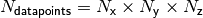

orbkit’s High-Level Interface¶
This chapter should serve as an overview of how to use orbkit’s high-level interface within your Python programs. For clarity, it is structured equivalently to Usage via the Terminal.
Table of Contents:
General Aspects¶
To access the main features of orbkit, you have to import it using:
import orbkit as ok
Now, you can specify all options for the computation analogously to Usage via the Terminal, e.g.:
ok.options.numproc = 4 # number of processes
Within this chapter we will discuss the most important options. For an overview of all available options, please refer to the chapter Options.
Finally, you have to run orbkit with:
data = ok.run_orbkit()
This function will not only save the results to the requested output formats, it will also return the results for further post-processing.
Hint
If you want to run several calculations with different options, you have to reset all options. This can be accomplished by calling ok.init() between the calculations, e.g.:
import orbkit as ok
# Set some options ...
# run orbkit
data_1 = ok.run_orbkit()
# Reset all options
ok.init()
# Set some options ...
# run orbkit
data_2 = ok.run_orbkit()
Input/Output¶
The input filename can be specified by:
ok.options.filename = 'h2o.md'
The file type has to be specified via:
ok.options.itype = 'molden'
The available file types are ‘molden’ (default),**aomix** (AOMix file), ‘gamess’ (GAMESS-US output file), ‘gaussian.log’ (GAUSSIAN output file), ‘gaussian.fchk’ (GAUSSIAN formatted checkpoint file).
Concerning orbkit’s output, you can choose between several following options:
- ‘h5’ (HDF5 file)
- ‘cb’ (Gaussian cube file)
- ‘vmd’ (VMD network)
- ‘am’ (ZIBAmiraMesh file)
- ‘hx’ (ZIBAmira network)
- ‘vmd’ (VMD network)
- ‘mayavi’ (opens a simple interactive Mayavi interface)
Several output types can be considered at once:
ok.options.otype = ['h5','vmd']
orbkit assumes the input file, if not otherwise stated, e.g.:
ok.options.outputname = 'h2o' # output file (base) name
For more information on the different output types, refer to Input/Output (Usage via the Terminal).
Hint
You can omit the creation of an output file by either setting ok.options.otype = [] or by setting ok.options.no_output = True. Furthermore, you can disable the creation of .oklog file can with ok.options.no_log = True, and the terminal output can be disabled with ok.options.quiet = True.
Grid Related Options¶
By default orbkit carries out all computations on a regular grid, i.e.,
.
In order invoke the application of a vector grid, i.e.,
 ,
the following option, containing the number of points per subprocess,
has to be set:
,
the following option, containing the number of points per subprocess,
has to be set:
ok.options.vector = 1e4
There are several ways to specify the grid in orbkit (in a.u.):
Adjusting the grid to the geometry:
ok.options.adjust_grid = [5, 0.1]
Here, orbkit creates a grid with a grid spacing of 0.1 a0 and the size of the molecule plus 5 a0 in each direction.
Reading the grid parameters from a file:
ok.options.grid_file = 'grid.txt'
This file can have two possible formats. It can be represented either by the boundary conditions of an equidistant rectangular grid (regular grid) or by a list of grid points (vector grid). For more information, refer to Grid Related Options (Usage via the Terminal).
Specifying the boundary conditions manually:
ok.grid.N_ = [ 201, 201, 101] # grid points (regular grid)
ok.grid.max_ = [ 10.0, 10.0, 5.0] # maximum grid value
ok.grid.min_ = [-10.0, -10.0, -5.0] # minimum grid value
Specifying the grid manually:
import numpy
ok.grid.x = numpy.linspace(-10,10,201)
ok.grid.y = numpy.array([0],dtype=float)
ok.grid.z = numpy.array([-1.0,1.1])
# We have already initialized a grid for orbkit:
ok.grid.is_initialized = True
where x, y and z have to be one-dimensional numpy.array of type float (numpy.float64).
Attention
The last line is mandatory, i.e., we have to tell orbkit, that there is no need to initialize the grid.
Hint
Please keep in mind that for a vector grid the relation
has to hold.
If you have initialized a vector grid manually, do not forget to also set the variable grid.is_vector = True. You can use this standard variable as input parameter in other orbkit functions.
Molecular Orbital Selection¶
orbkit is capable of calculating a selected set of molecular orbitals:
ok.options.calc_mo = ['3.1','1.1','2.3']
and of calculating the density with a selected set of molecular orbitals:
ok.options.mo_set = [[1,2,3], # first set
['homo', 'lumo+2:lumo+4']] # second set
Note
While the first example uses the MOLPRO-like nomenclature, e.g., 3.1 for the third orbital in symmetry one, the second example uses the index within the input file (counting from one).
For more information, refer to Molecular Orbital Selection (Usage via the Terminal).
Derivative Calculation¶
orbkit can compute analytical spatial derivatives with respect to  ,
,
 , and
, and  for the atomic and molecular orbitals, as well
as for the electron density:
for the atomic and molecular orbitals, as well
as for the electron density:
ok.options.drv = ['x', 'z']
This invokes the computation of the derivatives with respect to
and the computation of the derivatives with respect to .
For second derivatives, specify the respective combinations,e.g., ‘xx’ or ‘yz’.
Return Values¶
Besides writing the requested output, the function run_orbkit(), returns all data computed:
data = ok.run_orbkit()
Depending on your options, this data set has a different structure.
| Computed Quantity | Returned Data |
| density | numpy.ndarray with shape=(N) |
| derivative of density |
|
| molecular orbitals |
|
| derivative of molecular orbitals |
|
density from a set of molecular orbitals |
|
derivative of density from a set of molecular orbitals |
|
- N is shape as the grid.
- NDRV is the number derivatives requested.
- NMO is the number of molecular orbitals requested.
- NSET is the number of molecular orbital sets requested.